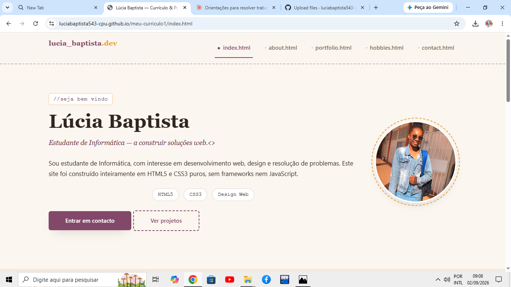
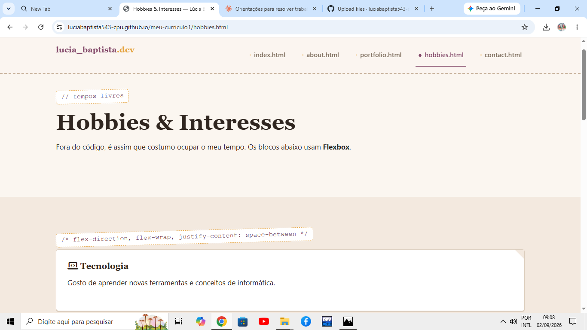
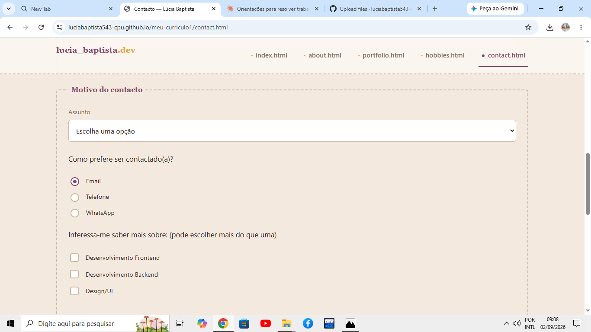

Site de Currículo — Home
Página inicial do meu site de currículo, com apresentação pessoal, vídeo e áudio de apresentação, construída em HTML5 semântico e CSS3 puro.
HTML5 CSS3Uma seleção de projetos académicos e pessoais. A grelha abaixo é construída com CSS Grid.

Página inicial do meu site de currículo, com apresentação pessoal, vídeo e áudio de apresentação, construída em HTML5 semântico e CSS3 puro.
HTML5 CSS3
Página de hobbies e interesses, com os cartões organizados em Flexbox, explorando flex-direction, flex-wrap, justify-content e align-items.
CSS Flexbox
Formulário de contacto completo, com todos os tipos de campo pedidos e validação feita apenas com atributos nativos de HTML5, sem JavaScript.
HTML5 Forms Validação nativa